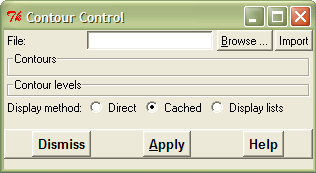
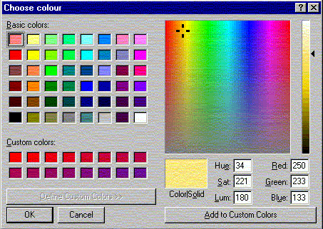

Manual for gOpenMol
Import and display a contour
gOpenMol can display both transparent and non-transparent isocontour solid surfaces
in a grid mesh. In fact gOpenMol does not know what kind of surface it is displaying,
so as long as you can describe your property as a grid mesh data you can display it with
gOpenMol. If your data points (in the mesh) are vectors you can colour the points according to
the vector norm and plot the vectors at the respective points.
The contour manager widget controls the display of the isocontour surfaces:
Main contour control widget:

Select contour colour:

Select contour file:

The display of orbitals or electron densities from a GaussianXX calculation
- Make first your calculation using the GaussianXX-program. Before you submit the job
you have to know a few things:
- In your GaussianXX job input file you have to define a region in your x,y,z-space
defining the size and place of your grid data.
- You have to define the property to be calulated (orbital/electron density/electrostatic
potential).
- Examples how this input file could look like you will find in the source code of the
conversion program (gcube2plt.c),
which converts the GaussianXX grid data output into a format recognized by gOpenMol.
The program (gcube2plt.c)
is in the gopenmol/utility directory. Please observe that the cube part of the GaussianXX
input is formatted.
- Use the gcube2plt-program to convert the grid mesh produced by GaussianXX into the plt-format
recognized by gOpenMol.
+++++++++++++++++++++++++++++++++++++++++++++++++++++++++++++++++++
This program converts the Gaussian output using the 'cube'
command to a form understandable to gopenmol.
Usage:
gcube2plt -iinput.cube -ooutput.plt
Options: -mXXX , where XXX is the molecular orbital number to be
placed in the plot file (you dont need this for
electron densities)
-p prevent the output of the coordinate file
+++++++++++++++++++++++++++++++++++++++++++++++++++++++++++++++++++
Where the input file is the cube mesh data and the output file is the plt-file.
The conversion program will also produce a coordinate input file based on the coordinates
GaussianXX used to generate the mesh data. This coordinate file (or an other file)
has to be read into gOpenMol before
you read in the mesh data (in the plt-format).
- From the View menu choose the Contour option and you will get the Contour manager widget.
Double click on the file name in the Files-widget. gOpenMol will now open the file (which
you will see in the widget on the right side) and reports the minimum and maximum values
of the grid data in the file.
- If you are running a TrueColor-display (full 24 bit display) you will have the colour
sliders to define a colour.
- If you are running a PseudoColor-display (8 bit display) you will have the colour buttons
to define a colour.
- Write an isocontour value in the isocontour input widget.
- Press one of the (small) colour buttons or use the sliders and you will se that the button
above the small
button or sliders will be coloured according to the colour you just picked/chose.
Press now this button and you
have defined a colour for your isocontour value. The small button beside the isocontour
value widget shows you also the colour you have chosen. You can define several isocontour values
by the same procedure.
- Now you can press the Apply button and you should see the defined surface.
- By default the surface is not smoothed. You get a smoothed surface by choosing
an isocontour level and pressing the Smoothing ON button.
- The transparency is controlled by the slider.
- To see your changes you have to press the apply button again!.
Maintained by
Leif Laaksonen (Leif.Laaksonen@csc.fi)
Last modified 1995/11/23